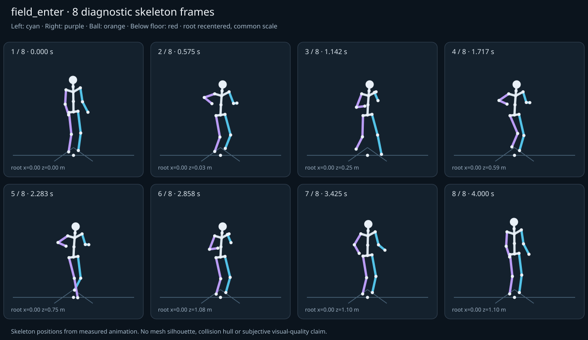

כל המדידות · תצוגת התנועה · JSON מקורי
ציון 92.8 · כיסוי 100%
עמידת ייחוס באותו תפקיד: idle_relaxed. תרחיש השחקן החיצוני מיושם פעם אחת.

| מדד | מצב | ערך | ציון | ראיות |
|---|---|---|---|---|
| החלקת רגליים | ירוק | 0.003736 | 92.53 | ראיות מקוריות{
"coordinateSpace": "Native GLB plus declared external actor position and heading, applied once.",
"supportSource": "declared",
"windows": 5,
"samples": 725,
"maxDriftMeters": 0.006313,
"p95SpeedMetersPerSecond": 0.032941,
"worst": {
"bone": "RightFoot",
"t": 2.85,
"start": 2,
"end": 4,
"driftMeters": 0.006313
}
} |
| חדירה לרצפה | ירוק | 0.000404 | 98.38 | ראיות מקוריות{
"samples": 9620,
"floorY": 0,
"probeKind": "declared sole probes plus skeletal joint centers (no mesh surfaces)",
"maxDepthMeters": 0.000683,
"worst": {
"t": 2.283333,
"bone": "RightFoot",
"depthMeters": 0.000683,
"y": -0.000683
}
} |
| קפיצות פוזה | ירוק | 0.580563 | 88.39 | ראיות מקוריות{
"adjacentPairs": 480,
"observations": 8160,
"maxDegrees60Hz": 6.451589,
"maxMarkerStepHeight60Hz": 0.023223,
"maxRootStepHeight60Hz": 0.009654,
"worst": {
"ratio": 0.5805633052375944,
"t": 1.933333,
"previousTime": 1.925,
"bone": "RightLeg",
"markerStepHeight60Hz": 0.023223,
"degrees60Hz": 6.451589
}
} |
| חריגות אנטומיות | ירוק | 0 | 100 | ראיות מקוריות{
"testedFrames": 481,
"affectedFrames": 0,
"checks": 8177,
"maxLimbFlexionDegrees": 136.432594,
"maxRelativeSegmentLengthChange": 0,
"hingeDirectionChecked": true,
"axialTwistChecked": false,
"violations": []
} |
| מגע בכדור | לא חל | — | — | ראיות מקוריות{} |
| כניסה ויציאה מול המתנה | ירוק | 0.004035 | 99.92 | ראיות מקוריות{
"entry": {
"ratio": 0.004034998791814857,
"t": 0,
"idleTime": 3.966667,
"markers": 17,
"rmsPositionHeight": 0.000101,
"rmsRotationDegrees": 0.019375,
"rmsVelocityHeightPerSecond": 0.003026,
"velocityEvaluated": true
},
"exit": {
"ratio": 0.004034998791815005,
"t": 4,
"idleTime": 3.966667,
"markers": 17,
"rmsPositionHeight": 0.000101,
"rmsRotationDegrees": 0.019375,
"rmsVelocityHeightPerSecond": 0.003026,
"velocityEvaluated": true
},
"worstEndpoint": "exit",
"alignment": "horizontal root translation; raw asset poses used when provided"
} |
| מהירות גוף מול צעדים | צהוב | 0.31867 | 68.13 | ראיות מקוריות{
"rootSource": "sampled presented root",
"rootSpeedMetersPerSecond": 0.275,
"observedRootSpeedMetersPerSecond": 0.275,
"referenceRootSpeedMetersPerSecond": 0.275,
"supportSource": "declared",
"backwardSweepSpeedMetersPerSecond": 0.187366,
"cadenceStepsPerSecond": 1.111111,
"impliedStrideMeters": 0.337258,
"rootStrideMeters": 0.495,
"supportSweeps": [
{
"bone": "LeftFoot",
"start": 0,
"end": 0.45,
"duration": 0.45,
"sweepMeters": 0.004235,
"speedMetersPerSecond": 0.00941
},
{
"bone": "LeftFoot",
"start": 1.1,
"end": 2.2,
"duration": 1.1,
"sweepMeters": 0.480667,
"speedMetersPerSecond": 0.43697
},
{
"bone": "LeftFoot",
"start": 2.9,
"end": 4,
"duration": 1.1,
"sweepMeters": 0.010113,
"speedMetersPerSecond": 0.009193
},
{
"bone": "RightFoot",
"start": 0,
"end": 1.35,
"duration": 1.35,
"sweepMeters": 0.286302,
"speedMetersPerSecond": 0.212075
},
{
"bone": "RightFoot",
"start": 2,
"end": 4,
"duration": 2,
"sweepMeters": 0.374731,
"speedMetersPerSecond": 0.187366
}
]
} |
| סימטריה | ירוק | 0 | 100 | ראיות מקוריות{
"mode": "structural",
"modeSource": "declared",
"structuralMismatch": 0,
"segments": [
{
"segment": "Arm-ForeArm",
"mismatch": 0
},
{
"segment": "ForeArm-Hand",
"mismatch": 0
},
{
"segment": "UpLeg-Leg",
"mismatch": 0
},
{
"segment": "Leg-Foot",
"mismatch": 0
}
],
"motionRmsHeight": null,
"worstMotion": null,
"bilateralPoseRmsHeightUnscored": 0.104954,
"note": "One-sided authored actions are checked for structural symmetry only."
} |